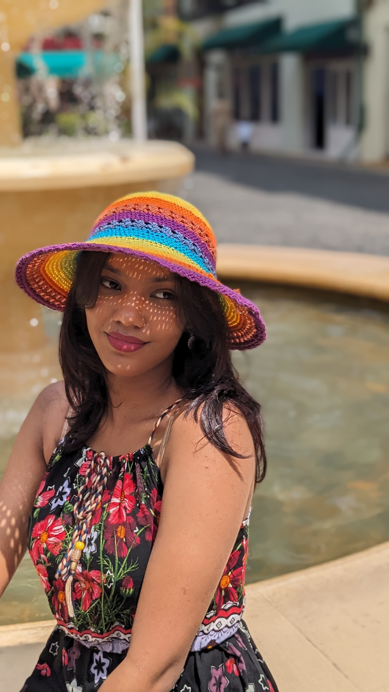

Welcome to the vibrant world of Charvi Mehta!

Charvi is a passionate 17-year-old artist with a spark for creativity. Her imagination ignites on paper,
bringing to life stunning drawings and sketches that capture the essence of the world around her. Whether it's a
detailed portrait or a whimsical scene, Charvi's artwork reflects a deep love for artistic expression.
Beyond the canvas, Charvi harbors a curious spirit that yearns to explore.
Her dream is to embark on a world tour, immersing herself in the diverse cultures and vibrant cities that
dot our globe. From bustling metropolises to serene countrysides, she seeks inspiration and understanding from
every experience.
Currently, Charvi is taking a giant leap towards her future by pursuing a B.Tech degree at the prestigious
Manipal Institute of Technology in Bangalore.
This exciting journey will equip her with the technical
skills and knowledge she needs to navigate the ever-evolving world of technology.
Stay tuned!
This website will be your one-stop destination to follow Charvi's artistic endeavors and academic journey. We'll
share glimpses of her artwork, updates on her B.Tech progress, and perhaps even catch a sneak peek into her
travel aspirations as they unfold.